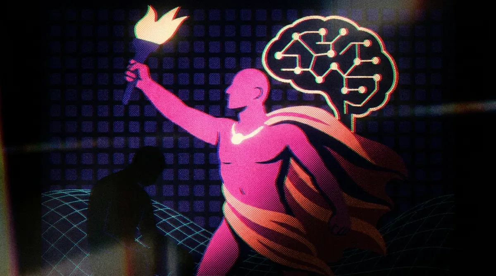

ИсследованияИндустрия
Anthropic ограничивает модели для конкурентов и теснит собственных клиентов
Anthropic режет доступ к лучшим моделям для конкурентов — и зарабатывает $50 млрд в год
The Decoder
12 июн.Бизнес-новости об искусственном интеллекте: продукты, партнёрства, рыночные тренды и релизы компаний со всего мира.
301 материалов
Anthropic режет доступ к лучшим моделям для конкурентов — и зарабатывает $50 млрд в год

Индийская видеомодель Varya в 20 раз дешевле Runway и Veo — и понимает местный контекст

Крейг Федериги: Siri не льстит и не вступает в романтические отношения — это осознанный выбор Apple.

Стартап Prometheus с оценкой $41 млрд обещает заменить инженеров ИИ — Безос видит в этом рост, а не сокращение рабочих мест.

Theker привлёк $85 млн на универсальных заводских роботов — крупнейший робототехнический раунд A в Европе.

Spacex IPO: инвесторы в SPV не знают своих долей — риски многоуровневых структур.

SpaceX провела крупнейшее IPO в истории — $75 млрд при цене $135 за акцию

Amazon обновила софт Rivian-фургонов: кондиционер глохнет через 30 секунд после выхода водителя.

Amazon впервые раскрыла водопотребление дата-центров: 2,5 млрд галлонов, на 2% меньше, чем годом ранее.

Stack Overflow тестирует платформу, где ИИ-агенты обмениваются решениями, но сообщество сомневается в её необходимости.

Почему ChatGPT, Claude и Gemini снова и снова пишут про смотрителя маяка Элиаса Торна

Flock утекла данные полицейских запросов по номерам — они оказались в DuckDuckGo и Bing.

Amazon строит дата-центры в Миссисипи — местные жители платят за это из своих счетов за свет

DoorDash запускает Ask DoorDash — чатбот для заказа еды и продуктов по тексту и фото.

ИИ-приложение Pool находит оригинальные ссылки к вашим скриншотам — рецептам, товарам и афишам

Deezer создала инструмент для выявления ИИ-музыки в плейлистах любых стриминговых сервисов.

Anthropic хочет, чтобы государство могло блокировать опасные ИИ-модели — как FAA блокирует самолёты

Токены дорожают, клиенты уходят: OpenAI и Anthropic готовятся к ценовой войне за API

97% слушателей не слышат разницы. Deezer сделал детектор, который слышит

Безос собрал $12 млрд на ИИ для заводов и фармацевтики — без единого публичного продукта

OpenAI готовится резко снизить цены на токены — Anthropic поджимает

Anthropic извинился за скрытые guardrails в Claude Fable 5 и пообещал прозрачность после скандала с дистилляцией.

Anthropic хотела тайно замедлить Claude для ИИ-исследователей — и была вынуждена отступить

Deezer запустила детектор ИИ-музыки, работающий на 20 платформах, включая Spotify и Apple Music.

Dario Amodei руководит Anthropic с одним прямым подчинённым — вот как это работает.

Opendoor ушёл из Индии и сослался на ИИ. Что это значит для глобального аутсорсинга?

Бывший инженер xAI подал иск, обвиняя компанию в игнорировании безопасности Grok и увольнении за whistleblowing.

Amazon привлёк $17,5 млрд банковского кредита для ИИ-инфраструктуры — ещё $14 млрд через облигации.

Oasis 3 от Decart генерирует дорожные миры часами, но пока теряет физику и связность сцены.

Jedify хочет стать слоем бизнес-контекста для ИИ-агентов: $24 млн и партнёрство со Snowflake.